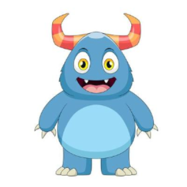
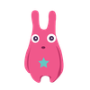

<!DOCTYPE html>
<html>
    <head>
        <title>Monster Game</title>
		<script src="jspsych-6.0.5/jspsych.js"></script>
		<script src="jspsych-6.0.5/plugins/jspsych-survey-text.js"></script>
    <script src="jspsych-6.0.5/plugins/jspsych-survey-multi-choice.js"></script>
		<script src="jspsych-6.0.5/plugins/jspsych-html-keyboard-response.js"></script>
		<script src="jspsych-6.0.5/plugins/jspsych-html-button-response.js"></script>
		<link href="jspsych-6.0.5/css/jspsych.css" rel="stylesheet" type="text/css"></link>
    </head>
    <body></body>
	<script>
    //next steps://
      //get the file to save with participant_ID//
      //get habituation audio to play at the same time as fixation cross//
		//create timeline array//
		var timeline = [];
		//input and store particpant info//
    var participant_info = {
		  type: 'survey-text',
		  questions: [
        {prompt: "Participant name", name: "participant_name"},
		    {prompt: "Participant ID", name: "participant_ID"}
      ],
      data: {task_part: 'id_question'},
      on_finish: function(data){
			  var responses = JSON.parse(data.responses);
			  var participant_name = responses.Q0;
			  var participant_id = responses.Q1;
      //  var short_tone = responses.Q2;
      //  var long_tone =  responses.Q3;
			  jsPsych.data.addProperties(
          {participantName: participant_name,
            participantID: participant_id,
        //    shortTone: short_tone,
        //    long_tone:longTone
          }
        )
		  }
		}

    //welcome message//
  	var welcome = {
        type: 'html-keyboard-response',
    		stimulus: 'Welcome to the experiment! Press any key to begin.'
    	};

    var choice1 = {
      type: 'html-button-response',
      stimulus: '</img>',
      choices: ['img/f1a.png', 'img/f1b.png'],
      prompt: "<p>Which shape do I like?</p>",
      button_html: ''
    };

    var choice2 = {
      type: 'html-button-response',
      stimulus: '</img>',
      choices: ['img/f2a.png', 'img/f2b.png'],
      prompt: "<p>Which shape do I like?</p>",
      button_html: ''
    };

  var choice3 = {
    type: 'html-button-response',
    stimulus: '</img>',
    choices: ['img/f3a.png', 'img/f3b.png'],
    prompt: "<p>Which shape do I like?</p>",
    button_html: ''
  };

  var choice4 = {
    type: 'html-button-response',
    stimulus: '</img>',
    choices: ['img/f4a.png', 'img/f4b.png'],
    prompt: "<p>Which shape do I like?</p>",
    button_html: ''
  };

	  //end message//
    var ending = {
	   	type: "html-keyboard-response",
	   	stimulus: "<p>Thank you for participating in this game!</p>",
      on_start: function(data){
        var id = jsPsych.data.get().filter({task_part: 'id_question'}).values()[0].participantID;
        var file_name = 'LT_' + id + '.csv';
        jsPsych.data.get().localSave('csv',file_name); // Saves a file on the computer running the experiment. First localSave argument is the format, second is the filename.
      }
	  };

    timeline.push(participant_info);
    timeline.push(welcome);
    timeline.push(choice1);
    timeline.push(choice2);
    timeline.push(choice3);
    timeline.push(choice4);
    timeline.push(ending);

		jsPsych.init({
			timeline: timeline,
			use_webaudio: false,
			preload_audio: ['sound/1s.mp3', 'sound/1.5s.mp3', 'sound/2s.mp3', 'sound/2.5s.mp3', 'sound/3s.mp3', 'sound/3.5s.mp3', 'sound/4s.mp3']
		})
	</script>
</html>
